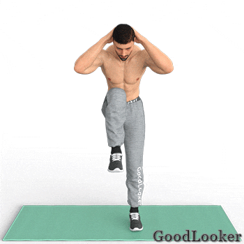

На третий день вы продолжите работать с собственным весом, активно прорабатывая глубокие мышцы тела. В эту тренировку для мужчин в домашних условиях включены функциональные, силовые и кардио-упражнения, которые помогут вам укрепить мышцы и стимулировать их рост.
Тренируйтесь подходами или по круговой системе на ваш выбор. В случае подходов повторите каждое упражнение по 2-3 подхода и только затем переходите к следующему упражнению. В случае круговой системы выполните все упражнения последовательно по одному подходу и затем повторите все упражнения в 2 или 3 круга. Тренироваться можно по таймеру или считая повторения.
Поставьте ноги немного шире плеч, руки сложите перед собой. Выполните классическое приседание до параллели с полом. На подъеме поднимите прямую ногу вверх и коснитесь ее стопы противоположной рукой. Снова присядьте и на следующем подъеме поднимите другую ногу. Функциональное упражнение из программы тренировок для мужчин дома обеспечивает кардио и силовую нагрузку на мышцы, прокачивая ноги, ягодицы, а также укрепляя мышцы живота.
Сколько выполнять: 14-16 приседаний всего.
Из положения стоя, руки за головой, согните одну ногу в колене. Поднимите колено вверх, одновременно наклоняясь к нему всем корпусом. Вернитесь обратно и поднимите другое колено вверх, повторяя движение. Не делайте наклон слишком низким, вы должны имитировать классические скручивания лежа только в положении стоя. Упражнение рассчитано на проработку верхних мышцы живота, а также бедер и ног, дополнительно обеспечивается кардио-нагрузка на тело.
Сколько выполнять: 18-20 подъемов колена всего.

Встаньте в упор лежа, руки поставьте немного ближе к корпусу, чем для классических отжиманий от пола. Согните руки в локтях, направляя их строго назад, чтобы нагрузить заднюю поверхность плеч. Сгибайте руки до параллели плеч с полом, а затем возвращайтесь в исходное положение. Отжимания с узкой постановкой нагружают руки, особенно трицепсы, а также прорабатывают мышцы груди, задействуют спину и мышцы плечевого пояса. Упражнение сложное, поэтому новички могут отжиматься от скамьи или от колен.
Сколько выполнять: 10-12 отжиманий.
Лягте на пол, ноги согните в коленях, прямые руки заведите за голову. Поднимите руки, голову и корпус вверх, скручиваясь к коленям. Во время подъема напрягайте живот, чтобы не перегрузить поясницу. Классическое упражнение на пресс включено в программу тренировок для мужчин без инвентаря, так как отлично прорабатывает мышцы живота и кора, увеличивая физическую силу тела.
Сколько выполнять: 12-15 повторений.
Встаньте прямо, ноги на ширине плеч, руки опущены вдоль корпуса. Наклонитесь вперед и поставьте ладони на пол. Сделайте несколько шагов ладонями вперед до упора лежа. Задержитесь в положении планки и вернитесь в исходное положение, двигаясь в обратном направлении. Популярное упражнение задействует мышцы верха корпуса и кора, укрепляя пресс, спину, плечевой пояс и руки, а также обеспечивает аэробную нагрузку, полезную для сердца.
Сколько выполнять: 10-12 повторений.
Встаньте прямо, ноги на ширине плеч, руки положите на пояс. Сделайте широкий шаг назад и согните ноги в коленях, опускаясь в выпад. Перенесите вес тела на переднюю ногу и вернитесь в исходное положение. Повторите выпад назад другой ногой. Старайтесь выполнять выпады не от поясницы, а от бедер и ягодиц, напрягая их во время движения. Выпады – базовое упражнение, которое включено в любую тренировку на все тело для мужчин и женщин, так как прорабатывает все мышечные группы ног, задействует пресс и кор.
Сколько выполнять: 18-20 выпадов всего.
Встаньте в собаку мордой вниз, для этого из упора лежа поднимите таз вверх, выпрямляя ноги и руки. Голову не опускайте слишком низко, чтобы было удобно выполнять отжимания. Согните руки в локтях под углом 90 градусов, не сгибая ноги в коленях. Спина должна быть прямая, переносите вес тело на руки и грудные мышцы. Сложное упражнение имитирует отжимание из стойки на руках, а потому в большей степени нагружает грудные, спину и мышцы плечевого пояса.
Сколько выполнять: 10-12 отжиманий.
Лягте на живот, руки вытяните перед собой, ноги свободно лежат, опираясь на свод стопы. Поднимите одну руку вверх, одновременно поднимая противоположную ногу. Спустя секунду-две поменяйте руку и ногу. Выполняйте движения попеременно, в спокойном ритме, напрягая спину и заднюю поверхность бедер. Пловец хорошо прорабатывает спину, в частности широчайшие, трапеции и спину, а также включает в работу бицепсы бедер и ягодицы.
Сколько выполнять: 18-20 подъемов всего.
Лягте на спину, ноги согните в коленях, руки свободно лежат вдоль тела. Поднимите таз вверх, напрягая ягодицы. Следите, чтобы бедра и поясница находилась на одном уровне. Опустите таз вниз и снова повторите ягодичный мостик. Изолированное упражнение из программы тренировок для мужчин с собственным весом поможет вам прокачать ягодичные мышцы и бицепсы бедер, чтобы сформировать спортивный рельеф нижней части тела. Также это одно из полезнейших упражнений для здоровья спины.
Сколько выполнять: 12-15 повторений.
Встаньте в упор лежа, ладони поставьте под плечевыми суставами, таз на одной линии с ногами и спиной. Из этого положения сделайте шаг вперед и поставьте ногу с внешней стороны корпуса рядом с плечом. Вернитесь обратно и повторите другой ногой. Суть упражнения в том, чтобы поставить ногу в точности рядом с ладонью, нагружая косые пресса и растягивая приводящие мышцы бедер. Упражнение поможет вам укрепить мышцы живота, а также улучшить гибкость ног, что увеличит эффективность тренировок.
Сколько выполнять: 18-20 подтягиваний ног к стопе.